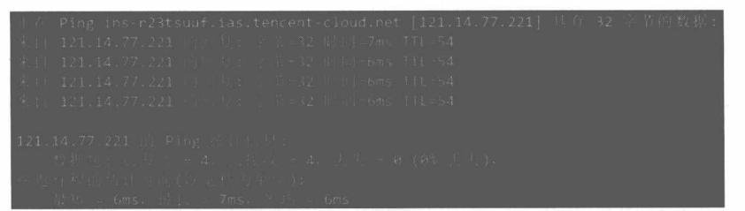
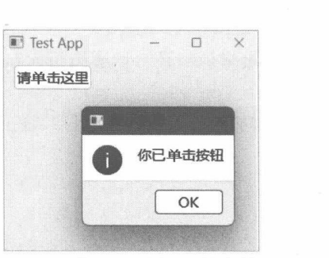

Qt 应用程序
- 应用程序类的使用。
- 处理命令行参数。
三个应用程序类
Qt公开了三个表示当前应用程序的类型。
- QCoreApplication：该类派生自QObject类，也是应用程序类的基类。该类用于没有图形化组件的应用程序(如控制台应用程序)，可以处理主事件循环、应用程序的初始化、应用程序退出后的清理工作。
- QGuiApplication：该类是 QCoreApplication的子类，在主事件循环中能够处理来自桌面环境的事件（如鼠标事件、键盘事件等)。该类用于带有图形化组件的应用程序，支持如用户界面字体、窗口图标等基础设置，以及桌面窗口管理。
- QApplication：该类是QGuiApplication的子类，也是用于带图形化组件的应用程序。QApplication类专用于基于QWidget（Qt可视化组件类及其子类）的图形化应用程序。
不管代码中使用的是哪个应用程序类，在一个Qt程序中只能实例化一个*Application对象。下面的代码在运行后会发生错误。
app1 = QCoreApplication()
app2 = QCoreApplication() # 此处会出错，应用程序中已存在一个QCoreApplication 实例在初始化时，要先创建*Application实例，再初始化其他组件，最后调用exec方法开启事件循环。exec方法一旦被调用，就会处于循环状态，直到事件循环结束、应用程序退出才会返回。因此，在exec方法调用前，必须将所有要用到的组件初始化。Qt应用程序大致的运行过程如下面代码所示。
#1.实例化应用程序对象
app = Q*Application()
#2. 初始化其他组件
#如窗口、自定义QWidget对象等
#3.调用exec方法，进入事件循环
app.exec()exec方法在返回时会报告应用程序的退出代码（正常退出一般返回0)，若Python代码需要将此代码报告给调用者，可以这样处理：
sys.exit(app.exec())如果在Qt程序退出后还要做一些清理工作，可以捕捉 SystemExit异常，例如：
try:
sys.exit(app.exec())
except SystemExit as e:
print(f"程序即将退出，退出码：{e.code}")示例：控制台应用程序
直接使用Python（或C/C++）就可以实现控制台应用程序（通过文本方式交互），本示例的目的是演示 QCoreApplication类的使用。
本示例定义了一个名为TextInput的事件，对应的事件类是TextInputEvent。示例运行后会不断地通过input函数读取控制台的输入文本，然后向应用程序对象发送TextInput事件。应用程序收到事件后会将用户输入的内容输出到控制台。期间如果用户输入了Q，就会退出应用程序。
- 注册自定义事件 TextInput。
TextInput = QEvent.Type(QEvent.registerEventType(QEvent.Type.User + 3))- 定义事件类 TextInputEvent，该类继承 QEvent 类。
class TextInputEvent(QEvent):
def __init__(self, type: QEvent.Type, text: str):
super().__init__(type)
self._text = text
def text(self) -> str:
return self._text用户所输入的文本将通过 TextInputEvent类的构造函数传递，并通过 text方法返回。
- 定义 work 函数，此函数将在一个单独的线程上运行，调用 input 函数读取用户输入的文本，然后向应用程序发送 TextInputEvent事件。
def work():
while True:
try:
s = input() #读取控制台的输入内容
#获取当前应用程序实例
curApp = QCoreApplication.instance()
#如果输入的是"Q"，就退出应用程序
if s == 'Q':
curApp.exit(0)
break
#准备事件对象
evt = TextInputEvent(TextInput, s)
#向应用程序发送事件
curApp.sendEvent(curApp, evt)
except Exception as ex:
print(ex)QCoreApplication.instance 方法能返回当前应用程序类的实例。退出应用程序可调用 exit 方法，发送事件则调用 sendEvent 方法。
- 定义MyApplication类。它将作为本示例的应用程序类，基类是 QCoreApplication。重写 event方法，接收TextInput事件，然后把刚从控制台读取的输入文本输出回控制台。
class MyApplication(QCoreApplication):
def __init__(self):
super().__init__()
def event(self, arg: QEvent) -> bool:
if arg.type() == TextInput:
#此时 arg 的实际类型为TextInputEvent
#因此可以访问text方法
print(f'你输入了:{arg.text()}')
return True
return super().event(arg)- 在应用程序初始化过程中，先创建 MyApplication 实例，然后启动新线程执行 work函数，最后调用 exec方法进入事件循环。
if __name__ == "__main__":
#实例化应用程序类
app = MyApplication()
#启动新线程
th = Thread(target=work)
th.start()
#进入事件循环
try:
sys.exit(app.exec())
except SystemExit as e:
print(f"程序即将退出，退出码：{e.code}")运行示例后，在控制台输入“你好”，按Enter键提交。随后控制台将输出：
你输入了：你好输入“Q”（必须是大写字母)，再按Enter键确认，退出应用程序，控制台输出：
程序即将退出，退出码：0命令行参数
使用C++语言编写的Qt应用程序，命令行参数可以直接传递给main函数，应用程序类（QCoreApplication、QGuiApplication、QApplication）的构造函数可直接引用，例如：
#include <QApplication>
#include <QWidget>
// argc：命令行参数的数量
// argv：命令行参数列表
int main(int argc, char **argv)
{
// 实例化 QApplication 时传递命令行参数
QApplication app(argc, argv);
// 其他初始化工作
return QApplication::exec();而 PySide 应用程序是基于 Python 脚本的，执行时先附加到 Python 解析器，再运行.py 文件。因此，在 Python 中将通过 sys模块下的 argv变量来获取命令行参数，然后再传递给应用程序类的构造函数，例如：
#获取命令行参数列表
args = sys.argv
#实例化应用程序对象并传递命令行参数
app = QCoreApplication(args)获得命令行参数只是一个字符串序列，处理起来不方便。此时可以考虑使用QCommandLineParser类。它是一个功能性辅助类，可以先设置所需的命令行参数信息，然后使用QCommandLineParser对象分析传入的命令行参数。处理完成后可以按需检索参数的值。
命令行参数一般可分为位置参数与选项参数。
位置参数没有“-”或“--”（一个或两个减号）前缀，而且在传递参数值时必须按照应用程序所定义的顺序进行。例如，下面两条命令所传递参数值是不同的。
python test.py abc xyz # arg1=abc, arg2=xyz
python test.py xyz abc # arg1=xyz, arg2=abc假设应用程序需要两个位置参数—arg1和 arg2。第一条命令传递给arg1参数的值是abc，传递给arg2参数的值是xyz；第二条命令传递给 arg1参数的值是xyz，传递给 arg2参数的值是 abc。位置参数在传递时不需要指定参数名称，参数值按照程序定义的顺序排列即可。
选项参数以“-”或“--”为前缀，后跟参数名称。
python test.py -a --b如果选项参数带有参数值，参数名称与参数值之间可以用空格或“=”连接。
python test.py -a=1 -b=2
python test.py --a 1 --b 2位置参数与选项参数可以混合使用。
python test.py --url=/includes --q file1 file2上述命令中，url和q是选项参数，file1和file2是位置参数。
3.3.1 示例：分析位置参数
addPositionalArgument方法用于定义位置参数，其声明如下：
def addPositionalArgument(name: str, description: str, syntax: str)- name：参数名称。
- description：参数的简要说明，如参数的功能与使用方法。
- syntax：在打印帮助信息时，可自定义参数值的提示符号（显示在帮助信息的Usage一行中）。必需参数一般包含尖括号（<name>)，可选参数包含中括号（[name])。syntax被忽略，则默认使用位置参数的名称。
调用parse或process 方法后，QCommandLineParser 对象会分析命令行参数。若操作成功，则可以通过positionalArguments 方法获取处理后的位置参数列表。
本示例将为应用程序定义三个位置参数—action、input、output。在执行应用程序时需要提供这些参数。若传递的命令行参数不符合要求，将在控制台中打印帮助信息。具体步骤如下。
- 从 sys模块的 argv变量获取传递给脚本文件的命令行参数。
args = sys.argv- 初始化应用程序对象，并接收命令行参数。
app = QCoreApplication(args)- 创建QCommandLineParser实例，并添加位置参数的定义。
parser = QCommandLineParser()
#添加帮助信息的选项支持
parser.addHelpOption()
#定义位置参数
parser.addPositionalArgument("action","操作类型，可选的值有copy、move、rename","<action>")
parser.addPositionalArgument("input", "输入文件", "<input file>")
parser.addPositionalArgument("output", "输出文件", "<output file>")调用addHelpOption方法添加如-h、--help等选项参数，并优化帮助信息的排版。
- 调用parse方法分析传递给应用程序的命令行参数。
result = parser.parse(app.arguments())parse方法返回 bool类型的值。如果成功就返回True，否则返回False。
- 应用程序将根据action参数（第一个参数）的值做出响应。
if result:
posargs = parser.positionalArguments()
#必须是三个参数
if len(posargs) != 3:
print("参数个数不正确\n")
#打印帮助信息
parser.showHelp()
else:
action = posargs[0]
if action == "copy":
print(f"从{posargs[1]}复制到{posargs[2]}")
elif action == "move":
print(f"从{posargs[1]}移动到{posargs[2]}")
elif action == "rename":
print(f"将{posargs[1]}重命名为{posargs[2]}")
else:
print("action参数为未知指令\n")
#打印帮助信息
parser.showHelp()positionalArguments方法返回的字符串列表中包含三个元素。第一个元素是 action参数的值，第二个元素是 input 参数的值，第三个元素是 output 参数的值。调用 showHelp 方法会在控制台打印帮助信息。
- 假设 Python 脚本文件名为 app.py，下面的命令执行后将输出帮助信息（因为未提供任何命令行参数）。
python app.py控制台打印的帮助信息如下：
Usage: app.py [options] <action> <input file> <output file>
Options:
-?, -h, --help Displays help on commandline options.
--help-all Displays help including Qt specific options.
Arguments:
action 操作类型，可选的值有copy、move、rename
input 输入文件
output 输出文件- 运行以下命令将不会打印帮助信息，因为传递的命令行参数是正确的。
python app.py move /data/dxv.ts /foo/dic.ts控制台将响应以下内容：
从/data/dxv.ts移动到/foo/dic.ts3.3.2 添加选项参数
选项参数使用QCommandLineOption类来定义，它的构造函数如下：
QCommandLineOption(name)
QCommandLineOption(name, description, valueName, defaultValue)
QCommandLineOption(names)
QCommandLineOption(names, description, valueName, defaultValue)
QCommandLineOption(other)- name：选项参数的名称，字符串类型。如果名称只有一个字符，将视为短名称的命令行参数，例如-a、-y、-5等。根据Qt官方文档的描述，name也可以指定长名称的命令行参数（长度在一个字符以上)，如--file、--build等。但是，name参数存在小问题，若指定为长名称的命令行参数，会识别为复合参数，而不是长名称参数。例如，指定name=best，会识别为4个短名称命令行参数：-b、-e、-s、-t，而不是--best。此问题仅在面向Python的PySide库中存在，在面向C++的库中并不存在。解决方法是将长名称放在一个列表（或元组）对象中，传递给names参数，如QCommandLineOption(['--best'],...)。
- names：类型为字符串序列，可以用列表类型或元组类型。为选项参数分配多个名称，常见的用法是短名称和长名称的混合，如-p、--print。
- description：命令行参数的描述信息，阐述其用途或用法。
- valueName：如果选项参数需要参数值，可以为参数值分配一个通用名称（或者叫占位符名称)。此名称主要用于帮助信息，如-o、--output <output file name>。如果选项不需要参数值，可以忽略valueName；如果选项需要参数值，就要为 valueName分配一个名称。
- defaultValue：选项参数的默认值。当命令行参数中找不到与选项参数对应的值时，将使用此默认值。
- other：用另一个 QCommandLineOption 对象来初始化当前实例。
在 QCommandLineParser 对象中，要调用 addOption 方法添加 QCommandLineOption 实例，或者调用 addOptions 方法一次性添加多个 QCommandLineOption 实例。
3.3.3 示例：分析选项参数
本示例将演示使用QCommandLineParser类来分析选项参数。
- 从 sys.argv变量中获取传入 Python 脚本的命令行参数。
args = sys.argv- 实例化应用程序类，并传递命令行参数。
app = QCoreApplication(args)- 创建 QCommandLineParser 实例。
cmdParser = QCommandLineParser()- 添加两个选项参数。
#添加第一个选项参数
#-p 或--oper
opt1 = QCommandLineOption(['p','oper'],'要执行的操作','operation')
cmdParser.addOption(opt1)
#添加第二个选项参数
#-n 或--name
opt2 = QCommandLineOption(['n','name'],'被执行的程序名称',"app name")
cmdParser.addOption(opt2)- 分析命令行参数，并打印出参数的值。
if cmdParser.parse(app.arguments()):
if cmdParser.isSet(opt1):
argnames ="、".join(opt1.names())
print(f'{argnames} = {cmdParser.value(opt1)}')
if cmdParser.isSet(opt2):
argnames ="、".join(opt2.names())
print(f'{argnames} = {cmdParser.value(opt2)}')
else:
#命令行参数分析失败，输出错误信息
print(cmdParser.errorText())isSet方法可以判断传递给应用程序的命令行参数中是否包含对应的选项参数。如果参数已设置，就打印出参数值。
运行示例程序时，以下方法均可以传递命令行参数。
python app.py -p close -n Zipper
python app.py --oper close --name zipper
python app.py --oper=close --name=Zipper
python app.py -n Zipper --oper close控制台将输出以下内容：
p、oper = close
n、name = Zipper3.3.4 帮助信息和版本信息
调用 QCommandLineParser 对象的 addHelpOption 方法可添加诸如-h、--help、-?（Windows 平台可用）等选项参数。此过程由 QCommandLineParser自动完成。在代码中调用 showHelp 方法就可以在控制台上打印帮助信息了。
为了让用户能更好地了解应用程序的功能，还可以调用setApplicationDescription方法来设置与应用程序相关的描述信息。
调用 addVersionOption 方法还可以添加-v、--version 选项。随后调用 showVersion 方法即可打印应用程序的版本号。showVersion 方法是通过调用 QCoreApplication 类的 applicationVersion 方法来获取版本号的，因此应用程序在初始化阶段需要使用QCoreApplication.setApplicationVersion方法设置版本号。
3.3.5 示例：显示帮助信息
本示例将演示 addHelpOption、addVersionOption、showHelp、showVersion 4个方法的使用。
- 读取传递给Python脚本文件的命令行参数。
args = sys.argv- 创建应用程序类实例，并接收命令行参数。
app = QCoreApplication(args)- 设置应用程序名称和版本号。
#设置应用程序名称
QCoreApplication.setApplicationName('My App')
#设置版本号
QCoreApplication.setApplicationVersion("1.0.3")设置应用程序名称和版本号，将在调用QCommandLineParser.showVersion方法打印版本信息时使用。
- 实例化 QCommandLineParser 对象。
parser = QCommandLineParser()- 设置应用程序描述，在调用 QCommandLineParser.showHelp方法时会用到。
parser.setApplicationDescription("示例应用程序")- 添加帮助信息、版本信息选项。
helpopt = parser.addHelpOption()
vsopt = parser.addVersionOption()- 添加位置参数 target。
parser.addPositionalArgument('target','操作目标')- 添加选项参数 width 和 radius。
widopt = QCommandLineOption(['w','width'], '宽度', "target's width", '15cm')
parser.addOption(widopt)
radopt = QCommandLineOption(['r','radius'],'半径', "target's radius", '0cm')
parser.addOption(radopt)- 解析命令行参数。如果解析成功，则打印与各参数相关的信息，否则打印错误信息。
if parser.parse(app.arguments()):
#是否打印帮助信息
if parser.isSet(helpopt):
parser.showHelp()
#是否打印版本信息
if parser.isSet(vsopt):
parser.showVersion()
#是否存提供了width 参数
if parser.isSet(widopt):
val = parser.value(widopt)
print(f'width = {val}')
#是否提供了 radius 参数
if parser.isSet(radopt):
val = parser.value(radopt)
print(f'radius = {val}')
#打印位置参数
posargs = parser.positionalArguments()
if len(posargs) > 0:
print(f'位置参数：{" ".join(posargs)}')
else:
#打印错误信息
print(parser.errorText())
#打印帮助信息
parser.showHelp()假设脚本文件名为demo.py。执行以下命令会打印帮助信息。
python demo.py --help控制台输出内容如下：
Usage: demo.py [options] target
示例应用程序
Options:
-?, -h, --help Displays help on commandline options.
--help-all Displays help including Qt specific options.
-v, --version Displays version information.
-w, --width <target's width> 宽度
-r, --radius <target's radius> 半径
Arguments:
target 操作目标以下命令打印版本信息。
python demo.py -v输出结果如下：
My App 1.0.3以下命令将传递位置参数和选项参数。
python demo.py Compute --width=100cm -r 50cm控制台将输出各参数的值。
width = 100cm
radius = 50cm
位置参数：Compute3.3.6 parse 方法与 process 方法
前文已介绍过 QCommandLineParser类的parse方法，其功能是对传递给应用程序的命令行参数进行解析。
process方法除了有解析命令行参数的功能外，还会自动处理如-h、--help、-v、--version等参数。不需要手动调用 showHelp 或 showVersion 方法，也不需要通过 isSet 方法去判断-h、--help 等选项参数是否可见。
如果 process方法处理失败，QCommandLineParser对象也会自动打印错误信息，不需要手动调用errorText方法来获取错误信息。
下面的代码演示了process方法的使用。
args = sys.argv
app = QCoreApplication(args)
app.setApplicationVersion("2.0.0")
app.setApplicationName("DemoApp")
cmdParser = QCommandLineParser()
cmdParser.addHelpOption()
cmdParser.addVersionOption()
cmdParser.process(app)3.3.7 示例：通过命令行参数运行其他应用程序
本示例将演示通过传递命令行参数运行另一个应用程序。假设当前Python脚本为 test.py，被执行的程序为 abc。执行 test.py abc 先运行 test.py 脚本，然后再运行 abc 程序。也可以向 abc 传递参数：
test.py abc --x -data 1234.- 从 sys.argv 变量读入命令行参数。
args = sys.argv- 实例化应用程序对象。
app = QCoreApplication(args)- 设置应用程序名称与版本号（打印帮助信息时可用）。
app.setApplicationName("ExeCmd")
app.setApplicationVersion("2.0.0")- 实例化 QCommandLineParser 对象。
cmdParser = QCommandLineParser()- 调用 setOptionsAfterPositionalArgumentsMode 方法，设置 OptionsAfterPositionalArgumentsMode模式，使QCommandLineParser对象在解析命令行参数时把位置参数后面的选项参数也解析为位置参数。例如 test.py abc --label -fjson，abc是位置参数，并且把--label、-f、json都解析为位置参数。因为这三个参数是传递给 abc程序使用的，因此不宜在 test.py 中进行处理。
cmdParser.setOptionsAfterPositionalArgumentsMode(
QCommandLineParser.OptionsAfterPositionalArgumentsMode.ParseAsPositionalArguments
)- 启用对帮助信息和版本信息选项的支持。
cmdParser.addHelpOption()
cmdParser.addVersionOption()- 添加位置参数 command。
cmdParser.addPositionalArgument(
'command', '要执行的命令', '<command> [args...]'
)- 处理命令行参数。
cmdParser.process(app)- 获取处理后的位置参数列表。
posargs = cmdParser.positionalArguments()- 调用目标程序，并输出结果。
if len(posargs) > 0:
process = QProcess()
#第一个参数是要执行的程序
process.setProgram(posargs[0])
#查看有没有要传递的参数
if len(posargs) > 1:
process.setArguments(posargs[1:])
#启动进程
process.start()
isstarted = process.waitForStarted()
if isstarted:
#等待执行完成
result = process.waitForFinished()
#打印执行结果
if result:
arr = process.readAll()
#解码出字符串
# Windows 上默认使用 GBK 编码
#Linux 上请使用 UTF-8 编码
text = arr.data().decode('gbk')
print(text)
else:
print(process.error())位置参数列表的第一个元素就是要执行的程序名称。如果被执行的程序需要命令行参数，那么参数将从第二个元素开始截取。执行另一个应用程序需要用到QProcess类，启动一个新进程并运行setProgram方法所指定的程序。如果需要传递命令行参数，则可以调用 setArguments方法来设置。
调用 start 方法启动新进程，若 waitForStarted 方法返回 True，则表示进程启动成功。随后调用waitForFinished方法等待进程退出，若顺利执行，则返回 True。readAll 方法用于读取新进程的标准输出数据，最后打印在当前应用程序的控制台中。
- 假设示例的脚本文件名为Demo.py，可通过以下命令来执行一次ping操作。
Demo.py cmd.exe /c ping www.qq.com其中，cmd.exe 对应本示例定义的 command参数，cmd.exe、/c、ping、www.qq.com 将被解析为位置参数，传递给ping命令。最终结果如图3-1所示。

3.3.8 示例：根据命令行参数设定窗口的呈现方式
本示例将实现根据命令行参数来决定主窗口的显示状态（最小化、最大化、常规窗口)。例如，执行程序脚本时传递--minimize参数，应用主窗口将以最小化方式呈现(任务栏显示程序图标，窗口隐藏)。
- 获取命令行参数。
args = sys.argv- 实例化 QCommandLineParser 对象。
cmdParser = QCommandLineParser()- 添加--normal选项，用于设置应用程序呈现常规窗口。
optNormal = QCommandLineOption(['n','normal'],'显示常规窗口')
cmdParser.addOption(optNormal)- 添加--minimize参数，设置窗口最小化显示。
optMinim = QCommandLineOption(['m','minimize'],'最小化窗口')
cmdParser.addOption(optMinim)- 添加--maximize选项，设置窗口最大化显示。
optMaxim = QCommandLineOption(['x','maximize'], '最大化窗口')
cmdParser.addOption(optMaxim)- 解析命令行参数。
result = cmdParser.parse(args)- 创建应用程序对象，并初始化主窗口。
#创建QGuiApplication 实例
app = QGuiApplication()
#创建窗口实例
window = QWindow()
#设置窗口大小
window.resize(452, 365)
#设置窗口标题
window.setTitle("示例应用程序")由于本示例用到图形化功能，因此应用程序类应选择QGuiApplication。
- 根据命令行参数设置窗口的呈现状态。
if result: #命令行参数解析成功
#根据命令行参数决定窗口状态
if cmdParser.isSet(optNormal):
window.showNormal()
elif cmdParser.isSet(optMinim):
window.showMinimized()
elif cmdParser.isSet(optMaxim):
window.showMaximized()
else: # 默认正常显示
window.showNormal()
else:
#如果命令行参数无效，将以默认方式显示窗口
window.show()- 进入应用程序的事件循环并等待退出。
sys.exit(app.exec())假设程序脚本文件为app.py，执行以下命令将使程序窗口最大化显示。
python app.py --maximize执行以下命令后，应用程序将显示常规窗口。
python app.py -n图形化应用程序
若应用程序使用了窗口对象以及窗口中的各种可视化组件，那么应用程序类要选择QGuiApplication(位于 QtGui 模块）或 QApplication（位于 QtWidgets 模块)。
最常用的是 QApplication，它可直接使用 QWidget 类以及其子类来构建图形界面。QWidget 以组件（或叫控件）方式封装各种可视化对象，易于管理和扩展。再配合信号、槽或事件等应用程序机制，可轻松实现用户与应用程序的交互逻辑。例如，用户单击按钮后弹出一个对话框，显示一条提示信息。窗口上需要一个 QPushButton 组件，并将它的 clicked 信号（被单击后会发出此信号）连接到一个自定义函数。在该函数中调用 QMessageBox 类的 information 方法显示提示信息（如图 3-2 所示）。

下面是演示代码：
from PySide6.QtWidgets import QApplication, QPushButton, QMessageBox, QWidget
#创建应用程序对象
thisApp = QApplication()
#创建主窗口
mainwin = QWidget()
#设置窗口大小和标题栏文本
mainwin.resize(150, 62)
mainwin.setWindowTitle('Test App')
#创建按钮组件实例
btn = QPushButton(mainwin)
btn.setText("请单击这里")
btn.move(12, 8)
#响应clicked信号
btn.clicked.connect(lambda: QMessageBox.information(
mainwin,
'提示信息',
'你已单击按钮'
))#显示窗口
mainwin.showNormal()
#进入事件循环
thisApp.exec()QGuiApplication的使用场景比较灵活，允许开发者自行绘制图形界面以及自定义交互逻辑。但使用起来较为烦琐，需要实现的细节较多，一般开发场景不推荐使用。
QGuiApplication 通常要配合 QWindow 类来构建窗口模型。若需要绘图功能，自定义窗口类应从QWindow 的子类派生，而不是直接从 QWindow类派生，常用的有 QRasterWindow 和 QOpenGLWindow。本书在后续的章节中会进一步阐述。